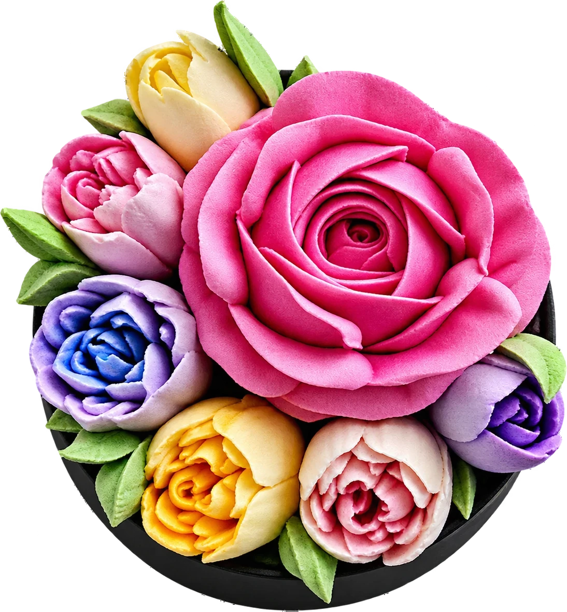
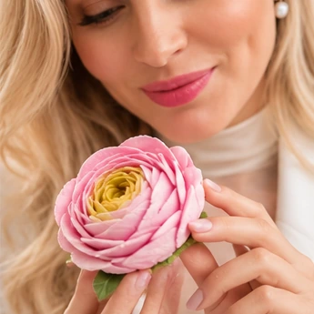
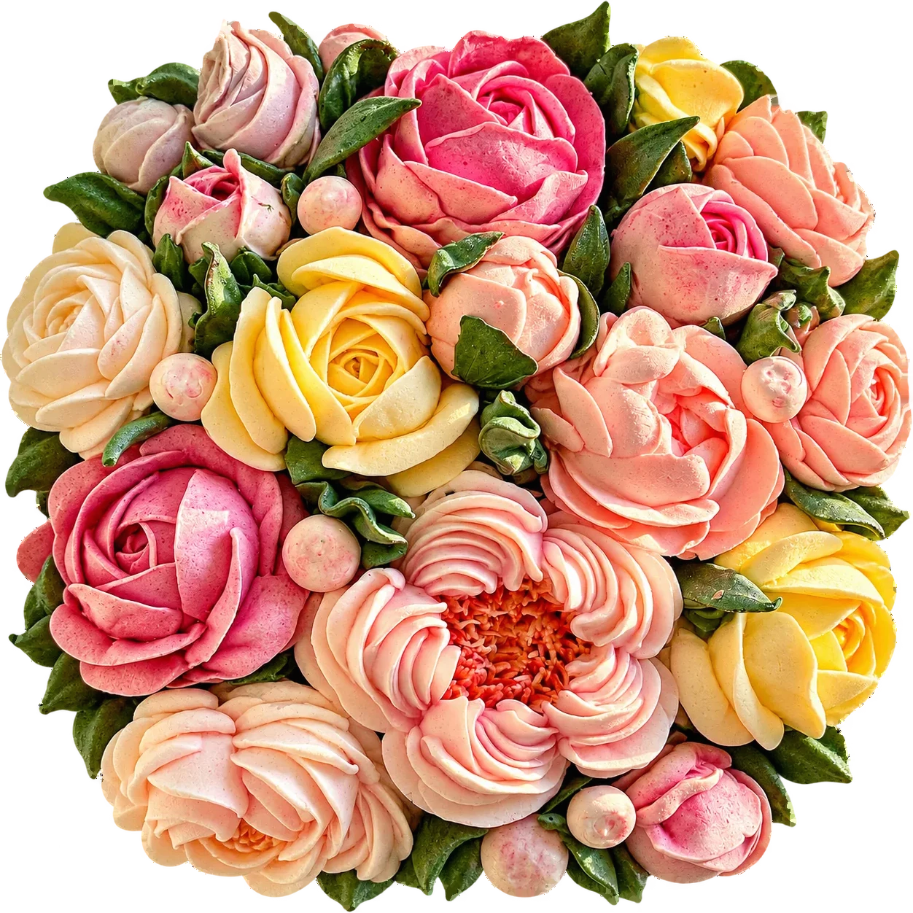
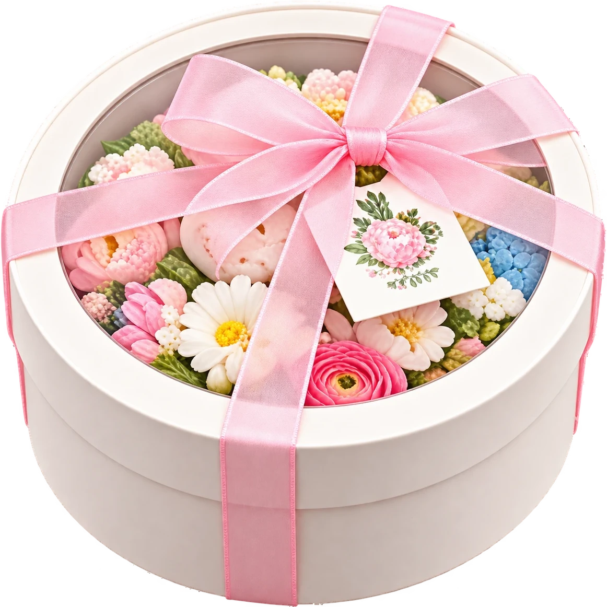
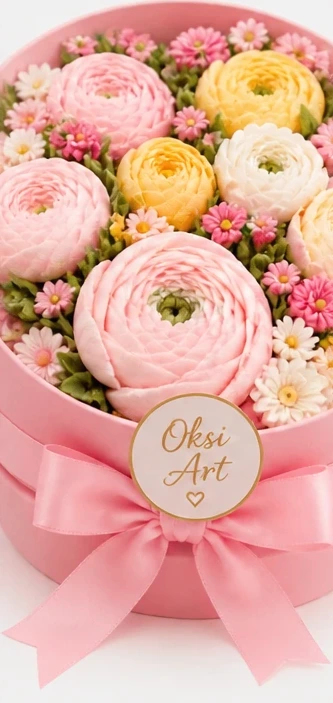
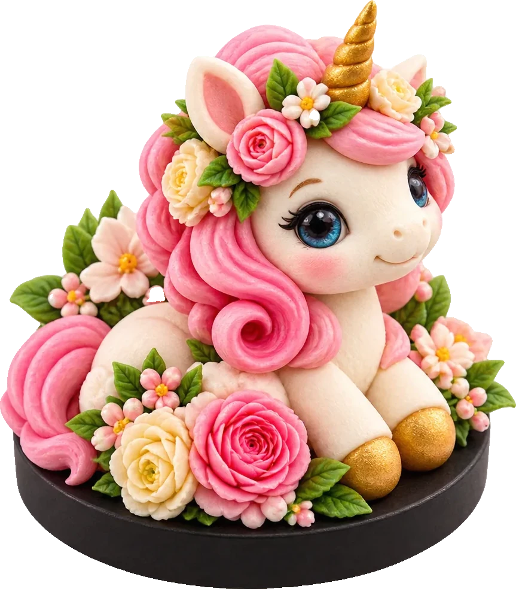
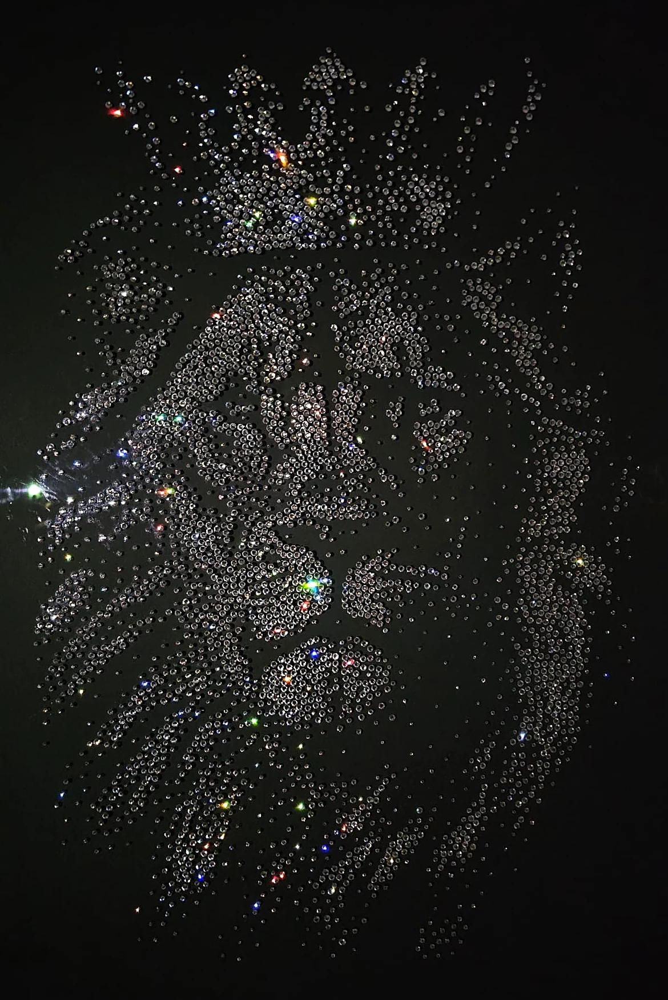
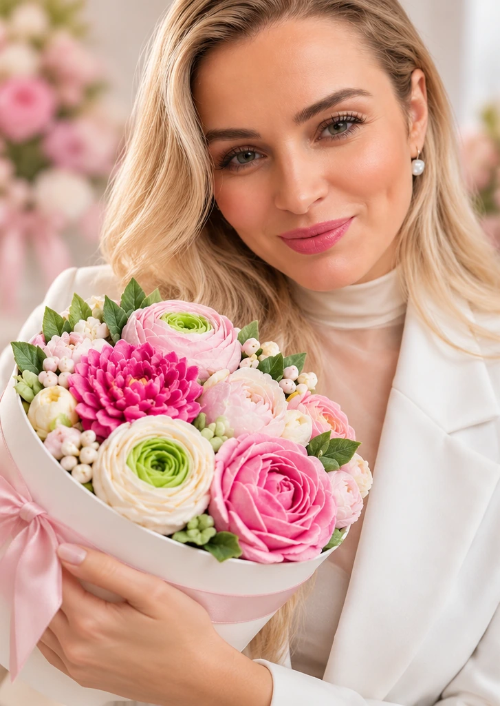
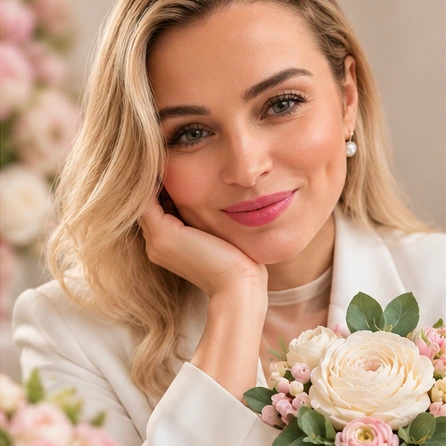

Vítejte ve světě Oksi Art
Tahle růže se dá sníst.
Zefírové květiny, marshmallow postavičky a zářivé obrazy z kamínků Preciosa. Každý kousek je tvořen s pečlivostí a vášní.

Zaphiry
Zefírové květiny.Jedlé umění, které pohladí duši i jazyk.
Zefírové květiny nejsou jen dezert. Jsou to křehké emoce zhmotněné ve sladké kráse.
Každá květina je ručně vytvořená s důrazem na autenticitu a jemnost. Používám kvalitní suroviny a přírodní barvy z ovoce, zeleniny nebo mořských řas.

Aby mé květy vypadaly co nejvíce jako skutečné.
- Originální dárek
- Jedlá dekorace
- Překvapení pro učitelky, maminky, přátele i děti
- Jen tak, pro radost

Ze sladké vitríny
Klikněte na kousek a prohlédněte si celou fotku.

Tematické krabičky
Nabízím i tematické krabičky a možnost sladit barvy nebo složení podle přání.
Objednat krabičku
Marshmallow
Marshmallow postavičky.Sladká radost, kterou si zamilujete.
Jsou měkké, roztomilé a tak chutné, že z nich budete mít radost na pohled i na jazyku. Každá postavička je originál a vzniká ručně s důrazem na detail, jemnost a hravost.

Tip k užívání: nejlépe chutnají první dny, třeba položené na teplou mléčnou pěnu nebo jemně zapečené v troubě, například na sušence s čokoládou.
Figurky jsou stabilní, ale s každým dnem přirozeně ztrácí pružnost, a přesto zůstávají jedlé. Jsou krásným dárkem i ozdobou slavnostního stolu.

Obrazy z kamínků
Obrazy z kamínků Preciosa.Krása, která září.
Když se spojí třpyt krystalů, preciznost rukou a vášeň pro tvorbu, vzniká něco, co nelze přehlédnout.
Skládám kamínek po kamínku, trpělivě, s důrazem na barvy, strukturu i emoci, kterou má výsledek vyvolat.
Každý obraz
- je originál,
- lze přizpůsobit barvami či motivem,
- má pevný základ a profesionální zpracování,
- je ideální jako luxusní dárek, osobní dekorace nebo výjimečný prvek do interiéru.
Online kurz
Naučte se to taky.Zefírové květiny krok za krokem.
- Vyberete si kurz
- Zaplatíte online
- Hned se vám otevřou videa
Cenu a datum spuštění doplníme.
Zajímá mě kurz
O mně
Jmenuji se Oksana.
Pocházím z Ukrajiny a v České republice žiji už více než 23 let. Tady jsem zakořenila, tvořím, sním a nacházím radost v maličkostech, které dokážou potěšit srdce druhých.
Když jsem poprvé spatřila zefírové květiny, okouzlily mě svou jemností a krásou tak silně, že jsem okamžitě věděla: tohle chci umět. Od té chvíle neustále hledám nové techniky, studuji, zkouším a tvořím, s jediným cílem, aby mé květy vypadaly co nejvíce jako skutečné.
Každý obraz je jako meditace. Trpělivost, preciznost, ticho.
Tvorba je pro mě způsob, jak se spojit se sebou i s ostatními. Děkuji, že tu jste.
Oksana
Objednávka
Máte zájem?Domluvíme se.
Zavolejte a sdělte své představy, nebo rovnou napište e-mail s objednávkou a uveďte, kolik kusů čeho si přejete. Objednávky vyřizujeme po platbě na účet.

Zavolejte
+420 774 875 889Pošlete e-mail
oksi.art.handmade@gmail.comZaplaťte předem
670100-2208530966/6210Číslo účtu
Mostecká 663, 460 06 Liberec VI - RochliceInstagram @_zaphiry